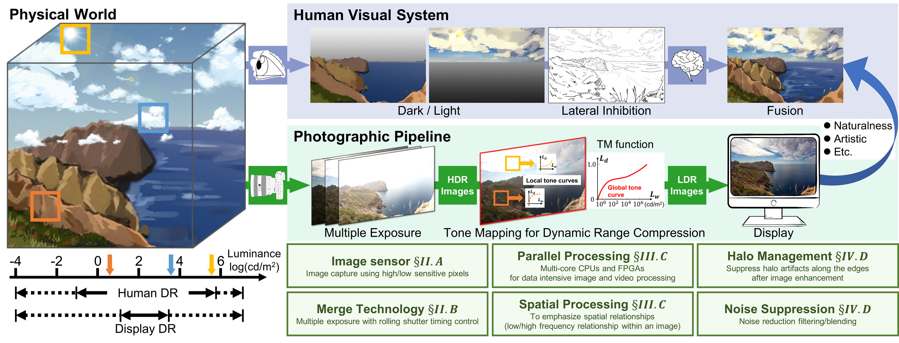

Abstract
The rising demand for high quality display has ensued active research in high dynamic range (HDR) imaging, which has the potential to replace the standard dynamic range imaging. This is due to HDR’s features like accurate reproducibility of a scene with its entire spectrum of visible lighting and color depth. But this capability comes with expensive capture, display, storage and distribution resource requirements. Also, display of HDR images/video content on an ordinary display device with limited dynamic range requires some form of adaptation. Many adaptation algorithms, widely known as tone mapping (TM) operators, have been studied and proposed in the last few decades. In this article, we present a comprehensive survey of 60 TM algorithms that have been implemented on hardware for acceleration and real-time performance. In this state-of-the-art survey, we will discuss those TM algorithms which have been implemented on GPU, FPGA, and ASIC in terms of their hardware specifications and performance. Output image quality is an important metric for TM algorithms. From our literature survey we found that, various objective quality metrics have been used to demonstrate the quality of those algorithms hardware implementation. We have compiled those metrics used in this survey, and analyzed the relationship between hardware cost, image quality and computational efficiency. Currently, machine learning-based (ML) algorithms have become an important tool to solve many image processing tasks, and this article concludes with a discussion on the future research directions to realize ML-based TM operators on hardware.
Key words
Tone mapping, computational complexity, survey, high dynamic range, image sensor, ASIC, FPGA, GPU.
Appeared in:
IEEE Transactions on Circuits and Systems for Video Technology,
February 18, 2021.
Result

Figure. This figure illustrates HVS and camera processing of HDR scenes. HVS through its non-linear and continuous adaptation can adjust across a very broad luminance range. Whereas a camera requires multiple exposure images (or HDR image sensor) to capture the wide ambient luminance levels that exists in the scenery. The HDR images produced from these multi-exposure images have higher bit width and a TM operator is required to faithfully display it on a common display device. Global TM functions are good for capturing overall preview of the input image. Local TM function by considering pixel neighborhood information for each input pixel, can emphasize more local details. Additional filters are used to improve the subjective quality of TM images.
In this survey we report a comprehensive list of about 60 tone mapping algorithms that have been implemented on hardware platforms like ASIC, FPGA and GPUs to accelerate the data intensive algorithms for real-time performance. Design and implementation of such algorithms are usually complicated, as hardware porting of their software equivalent may need to be redesigned for efficient hardware implementations. This effort leads to various design challenges that are encountered during the hardware development. Usually the software algorithms are realized with floating-point data type and fixed-point conversion of the algorithms lead to loss of accuracy (image quality). Also, authors prefer to design their own optimized tone mapping functions over others in order to avoid system redesign. In our literature survey we found that, various objective quality metrics have been used to demonstrate this distortion. For easy reference we have summarized all these objective metrics used in this survey. Finally, in this paper we also demonstrate the link between hardware cost and image quality thereby, illustrating the underlying trade-off. From our results we can observe that from early days FPGAs have been preferred platform for realizing real-time tone mapping applications. Features like rapid-prototyping and good support with developmental tools have made FPGAs a popular hardware platform. Another attractive feature of FPGA proven design is that it can be ported to structured ASICs which are available from many vendors, there by giving developers a faster route to market their products.
Reference
Citation
Y. Ou, P. Ambalathankandy, S. Takamaeda, M. Motomura, T. Asai and M. Ikebe, Real-Time Tone Mapping: A Survey and Cross-Implementation Hardware Benchmark, in IEEE Transactions on Circuits and Systems for Video Technology, vol. 32, no. 5, pp. 2666-2686, May 2022, doi: 10.1109/TCSVT.2021.3060143.
BibTeX
@article{ou2021real, author={Ou, Yafei and Ambalathankandy, Prasoon and Takamaeda, Shinya and Motomura, Masato and Asai, Tetsuya and Ikebe, Masayuki}, journal={IEEE Transactions on Circuits and Systems for Video Technology}, title={Real-Time Tone Mapping: A Survey and Cross-Implementation Hardware Benchmark}, year={2022}, volume={32}, number={5}, pages={2666-2686}, doi={10.1109/TCSVT.2021.3060143}}
Acknowledgments
This work was supported in part by the Japan Society for the Promotion of Science (JSPS) Grants-in-Aid for Scientific Research (KAKENHI) under Grant JP18H05288 and Grant JP18H0321309 and in part by JSPS Fellows under Grant 19J14105.